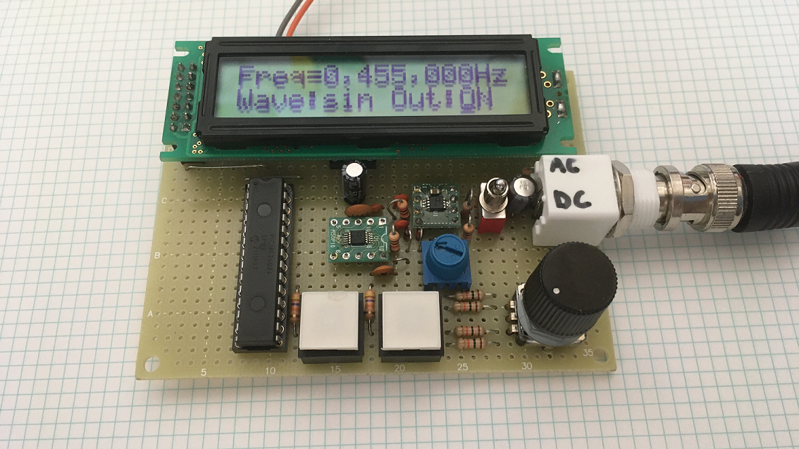

AD9833を使った簡易ファンクションジェネレータ
アナログデバイセズの DDS チップである AD9833 を使って簡易的なファンクションジェネレータを作りました。ボタンスイッチで周波数の各桁、出力波形、出力の状態を選択して、ロータリーエンコーダで設定します。振幅は可変抵抗で設定します。正弦波、三角波、矩形波を出力でき、ちょっとした信号が欲しいときに便利です。
回路図
AD9833 を載せたモジュールが格安で販売されていますが、その多くはフィルタ回路が乗っていません。ごく低い周波数ではあまり問題になりませんが、数百k～数 MHz ほどの周波数が必要な際は注意が必要です。
AD9833 は電源電圧に関係なく正側にオフセットを持った 約0.6Vp-p の信号を出力します。ただし、矩形波出力時のみ電源電圧付近まで振れるので、次段の回路の入力定格に気を付ける必要があります。上の回路に使用したオペアンプ AD8616 は入出力フルスイングなので定格的には問題ないのですが、矩形波出力時に大きく電圧が変わるのは不便なのでダイオードで 約1.2V 以上をクランプすることにしました。
AD9833 の SPI 通信の動作モードは Mode 2 です。通信は16bit単位で最上位ビットから送ります。
出力波形

10kHz 正弦波

100kHz 正弦波

1MHz 正弦波

10kHz 三角波

10kHz 矩形波
正弦波と三角波はかなりきれいな形をしています。矩形波は、回路を簡単にするためにフィルタ回路をバイパスするようにはしていないので波形がなまっています。今回の回路構成では、正弦波と三角波は 0～2MHz、矩形波は 0～200kHz くらいが実用範囲といったところです。これよりも高い周波数を出そうとすると振幅低下や、波形が崩れるなどのことが起こります。
どの波形でも周波数は非常に安定していますが、これは基準に使う発振器の精度によります。今回はセイコーエプソンの SG8002DC の 5V / 25MHz のものを使いました。
主な使用部品
DDS
AD9833BRMZ / アナログデバイセズ
オペアンプ
AD8616ARMZ / アナログデバイセズ
発振器
SG8002DC-25MHz-PHB / セイコーエプソン
全部で2000円ほどで作ることができました。機能は必要十分で、正確な波形と周波数を簡単に実現でき、データシートも非常に読みやすいのでおすすめの IC です。